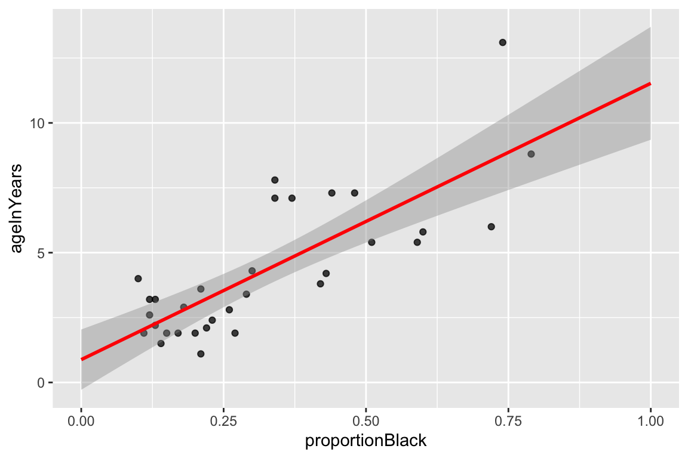

Chapter 12 Linear Regression Models II
Last week we reviewed the mathematical basis of linear regression, and we saw how to fit bivariate and regression models using vector operations. This week we’ll look at R’s built-in tools for fitting regression models and we’ll look at a couple of options for producing 3D plots.
12.1 New Libraries to install
We’ll be using several new packages for this class session. Install the following packages via one of the standard install mechanisms:
broomscatterplot3drgl– NOTE: On OS X,rglrequires you to install a program called XQuartz. XQuartz can be downloaded from the XQuartz Home Page. If you’re on a Mac, install XQuartz before installingrgl. You may have to reboot your computer after installing XQuartz.
12.2 Standard libraries
12.3 Specifying Regression Models in R
As one would expect, R has a built-in function for fitting linear regression models. The function lm() can be used to fit bivariate and multiple regression models, as well asanalysis of variance, analysis of covariance, and other linear models.
We’ll start by illustrating bivariate regression with the lion nose pigmentation data set introduced in the in-class assignment last week. Let’s load the lion data and remind ourselves of the basic structure:
lions <- read_csv("https://github.com/Bio723-class/example-datasets/raw/master/ABD-lion-noses.csv")
## Parsed with column specification:
## cols(
## proportionBlack = col_double(),
## ageInYears = col_double()
## )
head(lions)
## # A tibble: 6 x 2
## proportionBlack ageInYears
## <dbl> <dbl>
## 1 0.21 1.1
## 2 0.14 1.5
## 3 0.11 1.9
## 4 0.13 2.2
## 5 0.12 2.6
## 6 0.13 3.2Recall that our predictor (explanatory) variable is proportionBlack and our outcome (response) variable is ageInYears. We use the lm() function to fit the regression of proportionBlack on ageInYears as so:
The first argument to lm is an R “formula”, the second argument is a data frame.Formulas are R’s way of specifying models, though they find other uses as well (e.g. we saw the formula syntax when we introduced the facet_wrap and facet_grid functions from ggplot). The general form of a formula in R is response variable ~ explanatory variables. In the code example above, we have only a single explanatory variable, and thus our response variable is ageInYears and our explanatory variable is proportionBlack.
The lm function returns a list with a number of different components. The ones of most interest to us are fitted.values, coefficients, residuals, and (see the lm documentation for full details.)
fit.lions
##
## Call:
## lm(formula = ageInYears ~ proportionBlack, data = lions)
##
## Coefficients:
## (Intercept) proportionBlack
## 0.879 10.64712.3.1 Interpretting summary output from lm()
Calling summary on a fit model provides more detailed output:
summary(fit.lions)
##
## Call:
## lm(formula = ageInYears ~ proportionBlack, data = lions)
##
## Residuals:
## Min 1Q Median 3Q Max
## -2.5449 -1.1117 -0.5285 0.9635 4.3421
##
## Coefficients:
## Estimate Std. Error t value Pr(>|t|)
## (Intercept) 0.8790 0.5688 1.545 0.133
## proportionBlack 10.6471 1.5095 7.053 7.68e-08 ***
## ---
## Signif. codes: 0 '***' 0.001 '**' 0.01 '*' 0.05 '.' 0.1 ' ' 1
##
## Residual standard error: 1.669 on 30 degrees of freedom
## Multiple R-squared: 0.6238, Adjusted R-squared: 0.6113
## F-statistic: 49.75 on 1 and 30 DF, p-value: 7.677e-08The summary() function provides textual output reporting a number of features of the model fit. We’ll focus on the section labeled coefficients. For the model we fit above this looks like:
Coefficients:
Estimate Std. Error t value Pr(>|t|)
(Intercept) 0.8790 0.5688 1.545 0.133
proportionBlack 10.6471 1.5095 7.053 7.68e-08 ***
---
Signif. codes: 0 '***' 0.001 '**' 0.01 '*' 0.05 '.' 0.1 ' ' 1The first column of this printed table gives the values of the estimated coefficients. The first coefficient, labeled “(Intercept)” is the intercept of the regression line (\(a\) in the formulate \(\widehat{Y} = a + bX\)) – here the estimated value is 0.879. Since our model includes only one predictor variable (proportionBlack) we have only one additional coefficient (b = 10.647). Thus the mathematical equation describing our fit model is $ = 0.88 + 10.65() $
The second column (Std. Error) in the coefficients table gives the standard error of the estimated coefficients (based on assumption of multivariate normality of the data).
The third column (t value) gives a calculated t-value for the null hypothesis that the corresponding coefficient is zero, and the fourth column (Pr(>|t|)) is the probability of observing a t-value that large under the null hypothesis that the corresponding has a value of zero (i.e. a p-value). For the intercept, we see that the p-value is 0.133; thus we don’t have strong statistical evidence to reject the null hypothesis that this coefficient is zero. However, for the slope the p-value is < 1e-8. This is strong evidence on which to reject the null hypothesis of a zero coefficient (a zero slope would imply that)
12.4 Quick bivariate regression plots in ggplot
Since linear model fitting is a fairly common task, the ggplot library includes a geometric mapping, geom_smooth(), that will fit a linear model (as well as other models, as we’ll see in future lection) for us and generate the corresponding regression plot. We can create this by specifying method="lm" as the argument to geom_smooth():
ggplot(lions, aes(x = proportionBlack, y = ageInYears)) +
geom_point(alpha = 0.75) +
geom_smooth(method="lm", color = 'red', fullrange=TRUE) +
xlim(0,1)
By default, geom_smooth draws 95% confidence intervals for the regression model (the shaded gray area around the regression line). These confidence intervals reflect the uncertainty in the estimates of the slope and intercept, as reflected by the standard error of the coefficients discussed above. Note that confidence intervals for a linear regression model are wider far away from the mean values of \(X\) and \(Y\).
12.5 More about the data structure returned by lm()
The data structure returned by lm() is a list-like object with multiple fields:
We can access the names of all the fields associated with the fit object:
names(fit.lions)
## [1] "coefficients" "residuals" "effects" "rank"
## [5] "fitted.values" "assign" "qr" "df.residual"
## [9] "xlevels" "call" "terms" "model"12.5.1 Fitted values
The component fitted.values gives the predicted values of \(Y\) (\(\hat{Y}\) in the equations above) for each observed value of \(X\). We can plot these predicted values of \(Y\), as shown below. Notice how the predicted values all fall on a line (the regression line itself!)
ggplot(lions, aes(x = proportionBlack, y = ageInYears)) +
geom_point(alpha=0.7) + # observed data
geom_point(aes(x = proportionBlack, y = fit.lions$fitted.values), # predicted data
color='red', alpha=0.5) +
geom_segment(aes(xend = proportionBlack, yend = fit.lions$fitted.values),
color='red', linetype='dashed', alpha=0.25)Figure 12.1: Observed (black) and predicted (red) values in a linear regression of Y on X. Dashed lines indicate the residuals from the regression.
12.5.2 Getting the model coefficients
The coefficients components gives the value of the model parameters, namely the intercept and slope. These are the same values reported by the summary() function described above:
Typically these coefficients are given with more precision than we’d want to report. For the purpose of printing, can create character strings with rounded coefficients using the sprintf() function so:
As shown above, the estimated slope is 10.65 and the estimated intercept is 0.88. The model estimated by our linear regression is thus \(\widehat{\text{age}} = 0.88 + 10.65\text{proportion black}\).
12.6 Broom: a library for converting model results into data frames
The data structure we got back when we used the lm function to carry out linear regression, carries lots of useful information it isn’t a particularly “tidy” way to access the data. The R package Broom converts "statistical analysis objects from R into tidy data frames, so that they can more easily be combined, reshaped and otherwise processed with tools like ‘dplyr’, ‘tidyr’ and ‘ggplot2’. The discussion of Broom below is drawn from the Introduction to Broom
If you haven’t already done so, install the broom package before proceeding.
There are three broom functions that are particularly useful for our purposes. They are:
tidy– constructs a data frame that summarizes the model’s statistical findings.augment– add columns to the original data that was modeled. This includes predictions, residuals, and cluster assignments.glance– construct a concise one-row summary of the model.
12.6.1 broom::tidy
tidy applied to a regression model object returns a table giving the estimated coefficients and other information about the uncertainty of those estimates and corresponding p-values. This mirrors the table of coefficients that apply summary() provided to us, but instead of just printing this information we get it in the form of a data frame that we can do further computations on.
12.6.2 broom::augment
augment creates a data frame that combines the original data with related information from the model fit.
lions.augmented <- augment(fit.lions, lions)
head(lions.augmented)
## # A tibble: 6 x 9
## proportionBlack ageInYears .fitted .se.fit .resid .hat .sigma .cooksd
## <dbl> <dbl> <dbl> <dbl> <dbl> <dbl> <dbl> <dbl>
## 1 0.21 1.1 3.11 0.340 -2.01 0.0415 1.65 3.30e-2
## 2 0.14 1.5 2.37 0.403 -0.870 0.0584 1.69 8.94e-3
## 3 0.11 1.9 2.05 0.435 -0.150 0.0681 1.70 3.18e-4
## 4 0.13 2.2 2.26 0.414 -0.0631 0.0615 1.70 4.99e-5
## 5 0.12 2.6 2.16 0.424 0.443 0.0647 1.70 2.61e-3
## 6 0.13 3.2 2.26 0.414 0.937 0.0615 1.69 1.10e-2
## # … with 1 more variable: .std.resid <dbl>Now, in addition to the proportionBlack and ageInYears variables of the original data, we have columns like .fitted (value of Y predicted by the model for the corresponding value of X), .resid (difference between the actual Y and the predicted value), and a variety of other information for evalulating model uncertainty.
One thing we can do with this “augmented” data frame is to use it to better visualize and explore the model. For example, if we wanted to generate a figure highlighting the deviations from the model using vertical lines emanating from the regression line, we could do something like this:
ggplot(lions.augmented, aes(proportionBlack, ageInYears)) +
geom_point() + geom_smooth(method="lm", color="red",se=FALSE) +
geom_segment(aes(xend = proportionBlack, yend = .fitted), linetype="dashed")
An another example, we can quickly create a residual plot using the augmented data frame as so:
ggplot(lions.augmented, aes(proportionBlack, .resid)) +
geom_point() +
geom_hline(yintercept = 0, color = "red", linetype='dashed') +
labs(y = "Residuals", title = "Residual plot the lions regression model.")
12.6.3 broom::glance
glance() provides summary information about the goodness of fit of the model. Most relevant for our current discussion is the column giving the coefficient of determination (r.squared):
12.7 qq-plots
From our residuals plot of the lions data set, there may be some indication of greater variance of residuals for larger values of the predictor variable.
Let’s check how normal the residuals look using a diagnostic plot called a QQ-plot (quantile-quantile plot). A qq-plot is a graphical method for comparing distributions by plotting the respective quantiles against each other. Typically we plot sample quantiles against theoretical quantiles; for example to compare the sample quantiles to the theoretical expectation of normality. In the example below we construct the QQ-plot using “standardized residuals” from the regression which are just z-scores for the residuals.
Based on the QQ-plot, the residuals seem to diverge somewhat from a normal distirbution, as there’s noticeable curvature in the QQ-plot. When we test for the normality of the residuals using Shapiro-Wilk’s test for normality, we fail to reject the null hypothesis of normality at a significance threshold of \(\alpha=0.05\):
shapiro.test(lions.augmented$.resid)
##
## Shapiro-Wilk normality test
##
## data: lions.augmented$.resid
## W = 0.93879, p-value = 0.0692Even though we failed to reject the null hypothesis of normality for the residuals, but the P-value is very close to significance, suggesting some caution in applying the linear model.
12.8 Multiple regression
To illustrate multiple regression in R we’ll use a built in dataset called trees. trees consists of measurements of the girth, height, and volume of 31 black cherry trees (?trees for more info).
Let’s assume we’re lumberjacks, but our permit only allows us to harvest a fixed number of trees. We get paid by the total volume of wood we harvest, so we’re interested in predicting a tree’s volume (hard to measure directly) as a function of its girth and height (relatively easy to measure), so we can pick the best trees to harvest. We’ll therefore calculate a multiple regression of volume on height and width.
12.8.1 Exploration of the trees data set
We’ll start with some summary tables and diagnostic plots to familiarize ourselves with the data:
head(trees)
## # A tibble: 6 x 3
## Girth Height Volume
## <dbl> <dbl> <dbl>
## 1 8.3 70 10.3
## 2 8.6 65 10.3
## 3 8.8 63 10.2
## 4 10.5 72 16.4
## 5 10.7 81 18.8
## 6 10.8 83 19.7We’ll use the GGally::ggpairs() function introduced in problem set 01 to create a scatterplot matrix depicting the pairwise relationships between all the variables

As one might expect for morphological measurements related to size, the scatterplot matrix shows that all the variables are positively correlated, and girth and volume have a particularly strong correlation.
12.9 3D Plots
ggplot has no built in facilities for 3D scatter plots so we’ll use two new packages, scatterplot3D and rgl, to generate 3D visualizations.
12.9.1 scatterplot3d
library(scatterplot3d) # install this package first if needed
scatterplot3d(trees,
main = 'Tree Volume as\na function of Girth and Height')
The argument pch sets the type of plotting character to use in the plot (for a graphical key of the available plotting characters see this link) and color sets plotting character colors. We can change the angle of the 3D plot using the angle argument:
scatterplot3d(trees,
pch = 16, color="steelblue",
angle=75,
main = 'Tree Volume as\na function of Girth and Height')
We can add vertical lines to the plot using the type argument and remove the box around the plot:
scatterplot3d(trees,
pch = 16,
color="steelblue",
angle=75,
box = FALSE,
type = "h",
main = 'Tree Volume as\na function of Girth and Height')For more examples of how you can modify plots generated with the scatterplot3d package see this web page).
12.9.2 rgl
The package rgl is another package that we can use for 3D visualization. rgl is powerful because it lets us create interactive plots we can rotate and zoom in/out on.
You can then create an interactive 3D plot as so:
12.10 Fitting the regression model
From the 3D scatter plot it looks like we ought to be able to find a plane through the data that fits the scatter fairly well.
Let’s use the lm() function to calculate the multiple regression and summary() to get the details of the model:
fit.trees <- lm(Volume ~ Girth + Height, data=trees)
summary(fit.trees)
##
## Call:
## lm(formula = Volume ~ Girth + Height, data = trees)
##
## Residuals:
## Min 1Q Median 3Q Max
## -6.4065 -2.6493 -0.2876 2.2003 8.4847
##
## Coefficients:
## Estimate Std. Error t value Pr(>|t|)
## (Intercept) -57.9877 8.6382 -6.713 2.75e-07 ***
## Girth 4.7082 0.2643 17.816 < 2e-16 ***
## Height 0.3393 0.1302 2.607 0.0145 *
## ---
## Signif. codes: 0 '***' 0.001 '**' 0.01 '*' 0.05 '.' 0.1 ' ' 1
##
## Residual standard error: 3.882 on 28 degrees of freedom
## Multiple R-squared: 0.948, Adjusted R-squared: 0.9442
## F-statistic: 255 on 2 and 28 DF, p-value: < 2.2e-1612.10.1 Visualizing the regression model in scatterplot3d
To visualize the multiple regression, let’s use the scatterplot3d package to draw the 3D scatter of plots and the plane that corresponds to the regression model:
p <- scatterplot3d(trees, angle=55,type='h',
pch = 16, color = "steelblue",
main = 'Tree Volume as\na function of Girth and Height')
# add a plane representing the fit of the model
p$plane3d(fit.trees, col='orangered')
If instead of scatterplot3d, we wanted to use rgl to depict the model fit we can use the rgl.planes function as shown below.
coefs <- coef(fit.trees)
b1 <- coefs["Girth"]
b2 <- coefs["Height"]
c <- -1
a <- coefs["(Intercept)"]
plot3d(trees$Girth, trees$Height, trees$Volume,
xlab = "Girth", ylab = "Height", zlab = "Volume",
type = "s",
size = 1.5,
col = "red")
rgl.planes(b1, b2, c, a, alpha = 0.8, color = "gray")
rglwidget()From the figures it looks like the regression model fits pretty well, as we anticipated from the pairwise relationships.
12.11 Interpretting the regression model
The regression equation is: \(\hat{y}\) = + \(x_1\) +\(x_2\), where \(y\) is Volume, and \(x_1\) and \(x_2\) are Girth and Height respectively. Since they’re on different scales the coefficients for Girth and Height aren’t directly comparable. Both coefficients are significant at the \(p<0.05\) level, but note that Girth is the much stronger predictor. In fact the addition of height explains only a minor additional fraction of variation in tree volume, so from the lumberjack’s perspective the additional trouble of measuring height probably isn’t worth it.
12.12 Exploring the Vector Geometry of the Regression Model
Recall the broom:tidy produces a tabular summary of the coefficients of the model and their associated statistics:
broom::tidy(fit.trees)
## # A tibble: 3 x 5
## term estimate std.error statistic p.value
## <chr> <dbl> <dbl> <dbl> <dbl>
## 1 (Intercept) -58.0 8.64 -6.71 2.75e- 7
## 2 Girth 4.71 0.264 17.8 8.22e-17
## 3 Height 0.339 0.130 2.61 1.45e- 2broom:glance provides information about the fit of the model:
broom::glance(fit.trees)
## # A tibble: 1 x 11
## r.squared adj.r.squared sigma statistic p.value df logLik AIC BIC
## <dbl> <dbl> <dbl> <dbl> <dbl> <int> <dbl> <dbl> <dbl>
## 1 0.948 0.944 3.88 255. 1.07e-18 3 -84.5 177. 183.
## # … with 2 more variables: deviance <dbl>, df.residual <int>Let’s use our knowledge of vector geometry to further explore the relationship between the predicted Volume and the predictor variables. By definition the vector representing the predicted values lies in the subspace (in this case a plane) defined by Height and Girth, so let’s do some simple calculations to understand their length and angular relationships:
# proportional to length of vectors
sd(fit.trees$fitted.values)
## [1] 16.00434
sd(trees$Height)
## [1] 6.371813
sd(trees$Girth)
## [1] 3.138139
# cosines of angles btw vectors
cor(trees$Height, trees$Girth)
## [1] 0.5192801
cor(trees$Girth, fit.trees$fitted.values)
## [1] 0.9933158
cor(trees$Height, fit.trees$fitted.values)
## [1] 0.6144545
# angles btw vectors in degrees
acos(cor(trees$Girth, trees$Height)) * (180/pi)
## [1] 58.71603
acos(cor(trees$Girth, fit.trees$fitted.values)) * (180/pi)
## [1] 6.628322
acos(cor(trees$Height, fit.trees$fitted.values)) * (180/pi)
## [1] 52.08771Notice that \(\text{Girth}\) is very highly correlated with the \(\widehat{\text{Volume}}\) and hence the angle between these two vectors is very small (about 6.6 degrees). By contrast, \(\text{Height}\) is only moderately correlated with \(\widehat{\text{Volume}}\) and the angle between them is significantly larger (about 52 degrees).
12.13 Exploring the Residuals from the Model Fit
Now let’s look at the residuals from the regression. The residuals represent the `unexplained’ variance:
trees.augmented <- augment(fit.trees, trees)
ggplot(trees.augmented, aes(x = Girth, y = .resid)) +
geom_point() +
geom_hline(yintercept = 0, color='red', linetype='dashed') +
labs(x = "Girth", y = "Residuals")
Ideally the residuals should be evenly scattered around zero, with no trends as we go from high to low values of the dependent variable. As you can see, the residuals are somewhat u-shaped or j-shaped suggesting that there may be a non-linear aspect of the relationship that our model isn’t capturing.
12.14 An alternate model
Let’s think about the relationships we’re actually modeling for a few minutes. For the sake of simplicity let’s consider the trunk of a tree to be a cylinder. How do the dimensions of this cylinder relate to its volume? You can look up the formula for the volume of a cylinder, but the key thing you’ll want to note is that volume of the cylinder should be proportional to a characteristic length of the cylinder cubed (\(V \propto \mathrm{L}^3\)). This suggests that if we want to fit a linear model we should relate Girth and Height to \(\sqrt[3]{\mathrm{Volume}}\):
trees.cuberoot <- mutate(trees, cuberoot.Volume = Volume^0.33)
fit.trees.cuberoot <- lm(cuberoot.Volume ~ Girth + Height, data = trees.cuberoot)
broom::glance(fit.trees) # summary of fit of original model
## # A tibble: 1 x 11
## r.squared adj.r.squared sigma statistic p.value df logLik AIC BIC
## <dbl> <dbl> <dbl> <dbl> <dbl> <int> <dbl> <dbl> <dbl>
## 1 0.948 0.944 3.88 255. 1.07e-18 3 -84.5 177. 183.
## # … with 2 more variables: deviance <dbl>, df.residual <int>
broom::glance(fit.trees.cuberoot) # summary of fit of alternate model
## # A tibble: 1 x 11
## r.squared adj.r.squared sigma statistic p.value df logLik AIC BIC
## <dbl> <dbl> <dbl> <dbl> <dbl> <int> <dbl> <dbl> <dbl>
## 1 0.978 0.976 0.0811 612. 7.77e-24 3 35.5 -62.9 -57.2
## # … with 2 more variables: deviance <dbl>, df.residual <int>Comparing the summary tables, we see indeed that using the cube root of Volume improves the fit of our model some. Let’s examine the residuals of this alternate model.
trees.cuberoot <- broom::augment(fit.trees.cuberoot, trees.cuberoot)
ggplot(trees.cuberoot, aes(x = cuberoot.Volume, y = .resid)) +
geom_point() +
geom_hline(yintercept = 0, color='red', linetype='dashed') +
labs(x = "Girth", y = "Residuals")
As we can see the transformation we applied to the data did seem to make our residuals more uniform across the range of observations.
12.15 Exploring the impact of nearly collinear predictors on regression
In lecture we discussed the problems that can arise in regression when your predictor variables are nearly collinear. In this section we’ll illustrate some of these issues.
Consider again the trees data set. Recall that two of the variables – Girth and Volume – are highly correlated and thus nearly collinear.
cor(trees)
## Girth Height Volume
## Girth 1.0000000 0.5192801 0.9671194
## Height 0.5192801 1.0000000 0.5982497
## Volume 0.9671194 0.5982497 1.0000000Let’s explore what happens when we treat Height as the dependent variable, and Girth and Volume as the predictor variables.
fit.Height <- lm(Height ~ Girth + Volume, data = trees)
broom::glance(fit.Height)
## # A tibble: 1 x 11
## r.squared adj.r.squared sigma statistic p.value df logLik AIC BIC
## <dbl> <dbl> <dbl> <dbl> <dbl> <int> <dbl> <dbl> <dbl>
## 1 0.412 0.370 5.06 9.82 5.87e-4 3 -92.6 193. 199.
## # … with 2 more variables: deviance <dbl>, df.residual <int>We can, of course, fit the linear model despite the near collinearity, and we find that the model does have some predictive power, with \(R^2 = 0.41\), and with Volume being the more significant predictor.
Now, let’s created a slightly different version of the trees data set by add some noise to the three variables. Our goal here is to simulate a data set we might have created had we measured a slightly different set of trees during our sampling. We’ll use the jitter() function to add uniform noise to the data set.
jitter.Girth <- jitter(trees$Girth, amount= 0.5 * sd(trees$Girth))
jitter.Height <- jitter(trees$Height, amount= 0.5 * sd(trees$Height))
jitter.Volume <- jitter(trees$Volume, amount= 0.5 * sd(trees$Volume))
jitter.trees <- data.frame(Girth = jitter.Girth,
Height = jitter.Height,
Volume = jitter.Volume)Here we added uniform noise proportional to the one-quarter the standard deviation of each variable. Let’s take a moment to convince ourselves that our new data set, jitter.trees, is not too different from the trees data set from which it was derived.
set.seed(20190227)
# compare this to broom::tidy(trees)
broom::tidy(jitter.trees)
## # A tibble: 3 x 13
## column n mean sd median trimmed mad min max range skew
## <chr> <dbl> <dbl> <dbl> <dbl> <dbl> <dbl> <dbl> <dbl> <dbl> <dbl>
## 1 Girth 31 13.2 3.32 12.2 13.0 1.79 8.21 21.5 13.3 0.738
## 2 Height 31 76.3 6.83 76.4 76.4 4.98 63.2 89.2 26.0 -0.114
## 3 Volume 31 29.8 16.7 26.9 28.6 8.16 2.12 73.6 71.5 0.727
## # … with 2 more variables: kurtosis <dbl>, se <dbl>
# correlations among jittered variables are
# similar to those of the original variables
cor(jitter.trees)
## Girth Height Volume
## Girth 1.0000000 0.5487035 0.8782596
## Height 0.5487035 1.0000000 0.6223820
## Volume 0.8782596 0.6223820 1.0000000
## jittered variables are highly correlatd with original variables
cor(trees$Height, jitter.trees$Height)
## [1] 0.9622288
cor(trees$Girth, jitter.trees$Girth)
## [1] 0.9551085
cor(trees$Volume, jitter.trees$Volume)
## [1] 0.9458227Now that we’ve convinced ourselves that our jittered data set is a decent approximation to our original data set, let’s re-calculate the linear regression, and compare the coefficients of the jittered model to the original model:
fit.Height.jitter <- lm(Height ~ Girth + Volume, data = jitter.trees)
broom::tidy(fit.Height)
## # A tibble: 3 x 5
## term estimate std.error statistic p.value
## <chr> <dbl> <dbl> <dbl> <dbl>
## 1 (Intercept) 83.3 9.09 9.17 6.33e-10
## 2 Girth -1.86 1.16 -1.61 1.19e- 1
## 3 Volume 0.576 0.221 2.61 1.45e- 2
broom::tidy(fit.Height.jitter)
## # A tibble: 3 x 5
## term estimate std.error statistic p.value
## <chr> <dbl> <dbl> <dbl> <dbl>
## 1 (Intercept) 68.6 5.47 12.5 5.37e-13
## 2 Girth 0.0188 0.635 0.0296 9.77e- 1
## 3 Volume 0.252 0.127 1.99 5.69e- 2We see that the coefficients of the linear model have changed substantially between the original data and the jittered data. Our model is unstable to relatively modest changes to the data!
Let’s draw some plots to illustrate how different the models fit to the original and jittered data are:
# draw 3d scatter plots with small points so as not to obscure regression planes
p <- scatterplot3d(x=trees$Girth, y=trees$Volume, z=trees$Height,
angle=15, type='p', pch='.')
# original model
p$plane3d(fit.Height, col='orangered')
# jittered model
p$plane3d(fit.Height.jitter, col='blue')Let’s do the same comparison for the multiple regression of Volume on Height and Girth. In this case the predictor variables are nearly collinear.
fit.Volume <- lm(Volume ~ Girth + Height, data = trees)
fit.Volume.jitter <- lm(Volume ~ Girth + Height, data = jitter.trees)
coefficients(fit.Volume)
## (Intercept) Girth Height
## -57.9876589 4.7081605 0.3392512
coefficients(fit.Volume.jitter)
## (Intercept) Girth Height
## -58.5049104 3.8531106 0.4908979For this model, we see that the coefficients have changed only a small amount. The underlying data, jitter.trees, is the same in both cases, but now our model is stable because the predictor variables are only modestly correlated with each other.
Let’s generate another plot to illustrate the similarity of the models fit to the original and jittered data when Girth and Height are used to predict Volume.
p <- scatterplot3d(x=trees$Girth, y=trees$Height, z=trees$Volume,
angle=55, type='p', pch='.')
p$plane3d(fit.Volume, col='orangered')
p$plane3d(fit.Volume.jitter, col='blue')
Finally, let’s do some vector calculations to quantify how the angular deviation between the fit data and the predictor variables changes between the original and jittered data set for the two different multiple regressions:
# write a quickie fxn to express angle between vectors in degrees
vec.angle <- function(x,y) { acos(cor(x,y)) * (180/pi)}
# vector angles for fit of Height ~ Girth + Volume (orig)
vec.angle(fit.Height$fitted.values, trees$Girth)
## [1] 36.02644
vec.angle(fit.Height$fitted.values, trees$Volume)
## [1] 21.29297
# vector angles for fit of Height ~ Girth + Volume (jittered)
vec.angle(fit.Height.jitter$fitted.values, jitter.trees$Girth)
## [1] 28.16442
vec.angle(fit.Height.jitter$fitted.values, jitter.trees$Volume)
## [1] 0.4024545Now the same comparison for the non-collinear model Volume ~ Girth + Height.
# vector angles for fit of Volume ~ Girth + Height (orig)
vec.angle(fit.Volume$fitted.values, trees$Girth)
## [1] 6.628322
vec.angle(fit.Volume$fitted.values, trees$Height)
## [1] 52.08771
# vector angles for fit of Volume ~ Girth + Height (jittered)
vec.angle(fit.Volume.jitter$fitted.values, jitter.trees$Girth)
## [1] 10.83118
vec.angle(fit.Volume.jitter$fitted.values, jitter.trees$Height)
## [1] 45.89071As these calculation illustrate, the change in the regression plane in the jittered date is much smaller when the dependent variable are not nearly colinear.